Белорусская наступательная операция «Багратион»
23 июня — 29 августа 1944 года
Цели операции
Разгром центральной группы немецких армий, освобождение Белоруссии, выход к границам Восточной Пруссии и Польши. Крупнейшее наступление Красной Армии летом 1944 года.
Силы сторон
СССР
- Личный состав: 2.4 млн
- Орудия и миномёты: 36 000
- Танки и САУ: 5 200
- Самолёты: 5 300
Германия
- Личный состав: 1.2 млн
- Орудия и миномёты: 9 500
- Танки и САУ: 900
- Самолёты: 1 350
Советское командование
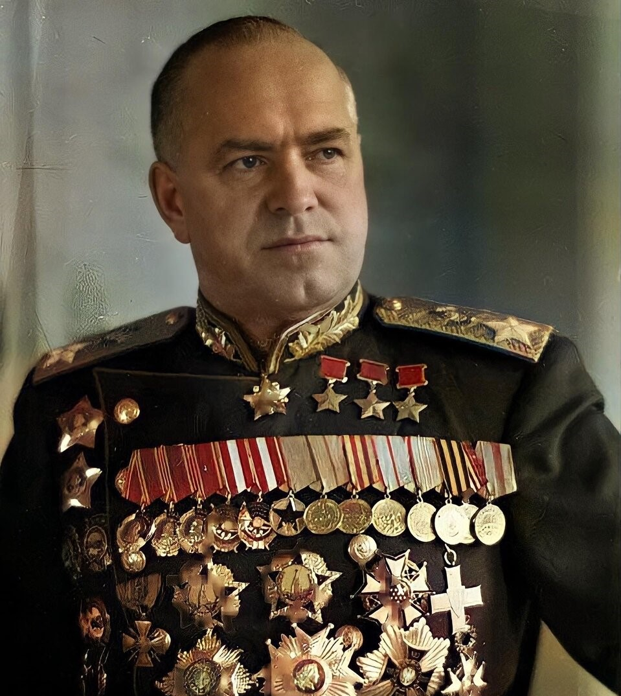
Георгий Жуков
Координатор 1-го и 2-го Белорусских фронтов
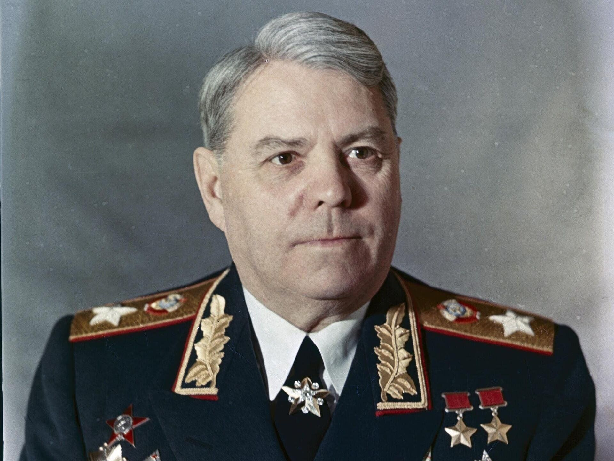
Александр Василевский
Координатор 1-го Прибалтийского и 3-го Белорусского фронтов
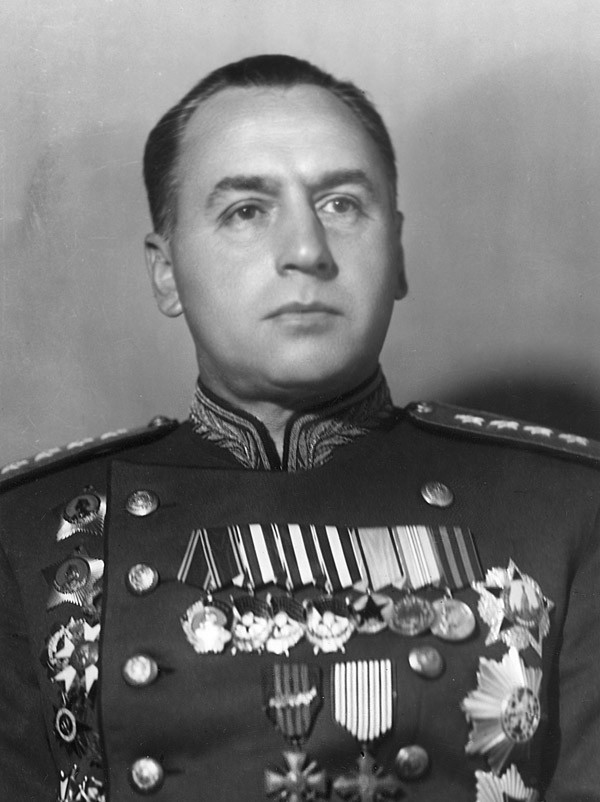
Алексей Антонов
Разработчик плана операции, начальник Оперативного управления Генштаба
Немецкое командование
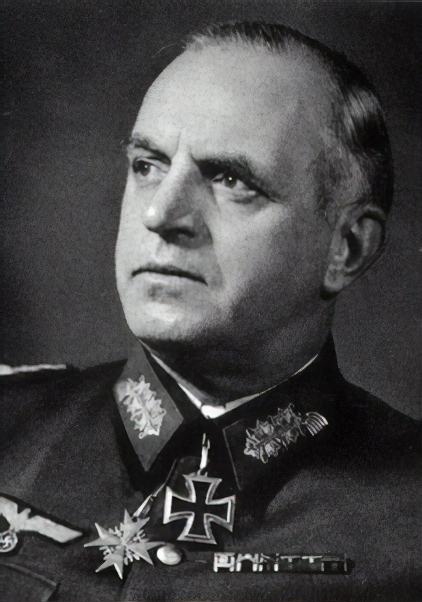
Эрнст Буш
Командующий группой армий «Центр» (до 28 июня)
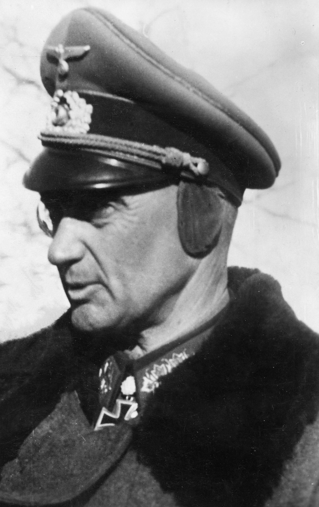
Вальтер Модель
Командующий группой армий «Центр» (с 28 июня)
Интерактив
Нажмите на одну из кнопок, чтобы увидеть информацию.
Поиск по датам
Здесь появится результат поиска
Карта наступления

Реакция немецких генералов
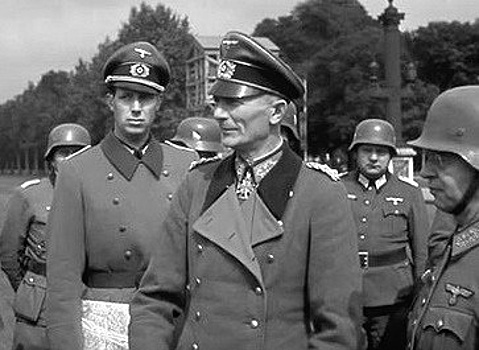
«Это была катастрофа, превосходящая Сталинградскую»
— из высказываний немецких генералов
— из высказываний немецких генералов
Командующие фронтами
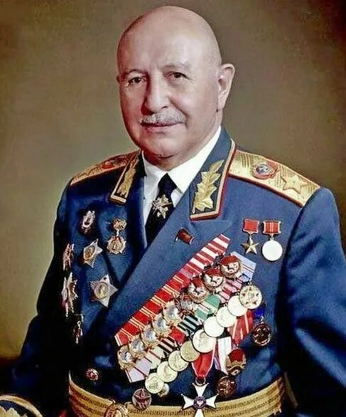
Иван Баграмян
1-й Прибалтийский фронт
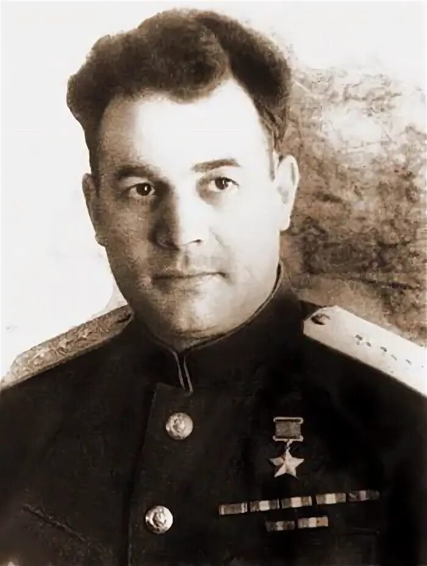
Иван Черняховский
3-й Белорусский фронт
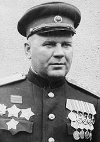
Георгий Захаров
2-й Белорусский фронт
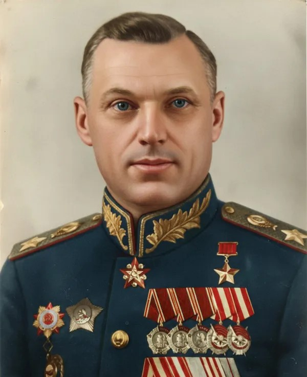
Константин Рокоссовский
1-й Белорусский фронт
Герои операции «Багратион»
ИЯ
Иван Якубовский
Командир танковой бригады. В боях за Минск его бригада первой ворвалась в город, уничтожила десятки огневых точек и взяла в плен более 200 солдат противника. Дважды Герой Советского Союза.
ПК
Павел Курныгин
Командир стрелкового полка. При прорыве обороны под Витебском лично поднял бойцов в атаку, захватил важную высоту и обеспечил продвижение дивизии. Герой Советского Союза (посмертно).
ЮС
Юрий Смирнов
Лётчик-штурмовик. Совершил 146 боевых вылетов, уничтожил 30 танков, 50 автомашин, 15 зенитных батарей. Дважды Герой Советского Союза.
ПЕ
Пётр Егоров
Партизанский командир. Организовал крушение 40 вражеских эшелонов, взорвал 3 моста, истребил более 500 гитлеровцев. Герой Советского Союза.
Фотохроника операции
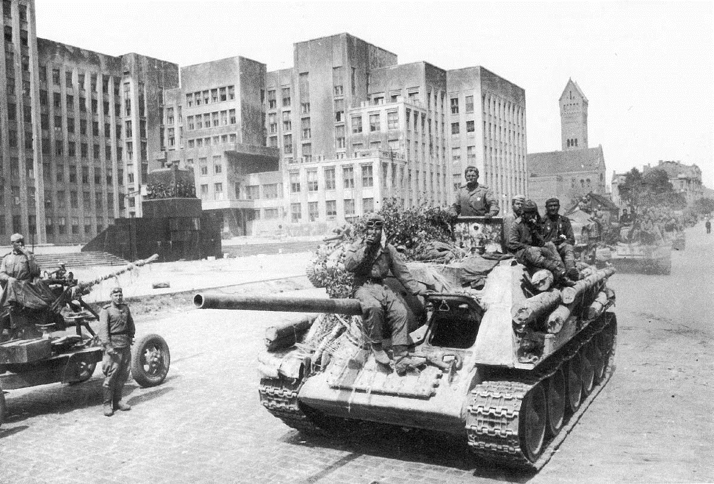
Освобождённый Минск, июль 1944
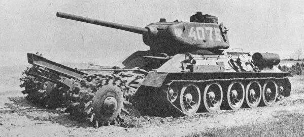
Танк Т-34-85 с тралом
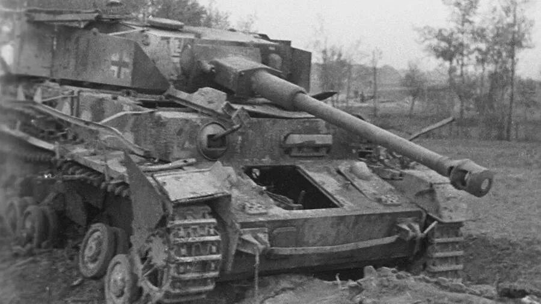
Уничтоженный немецкий танк PZ-4
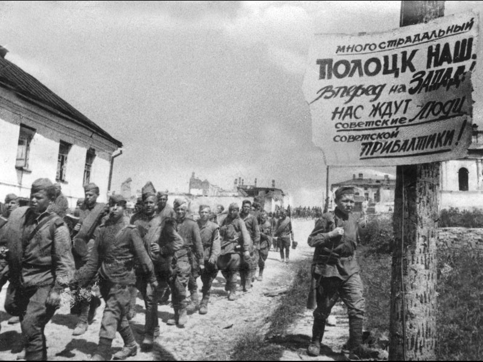
Полоцк, освобожденный войсками 1-го Прибалтийского фронта
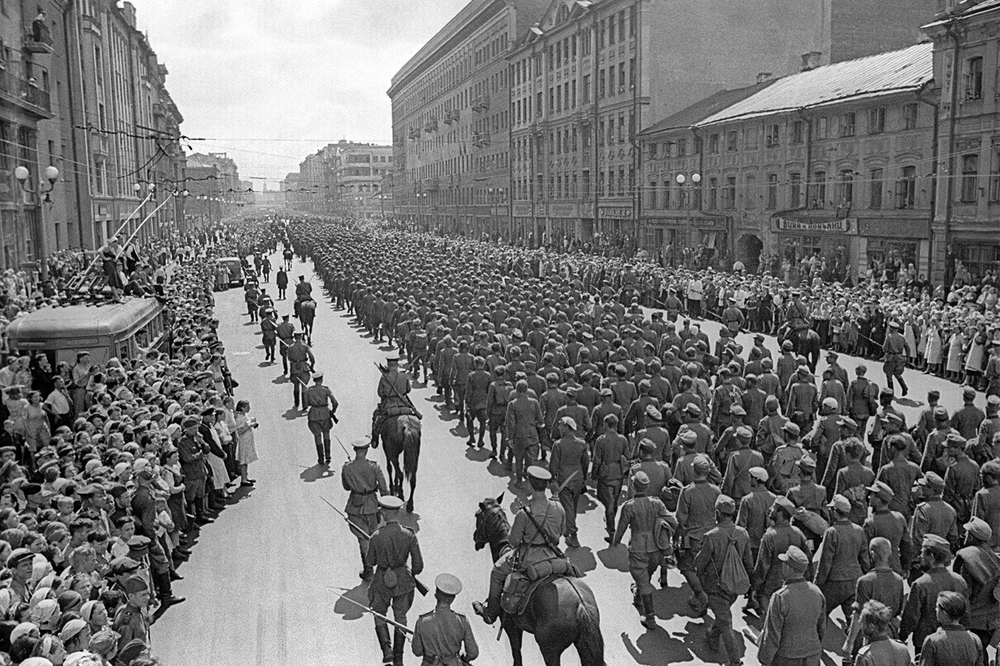
Марш "побежденных" в Москве, 1944
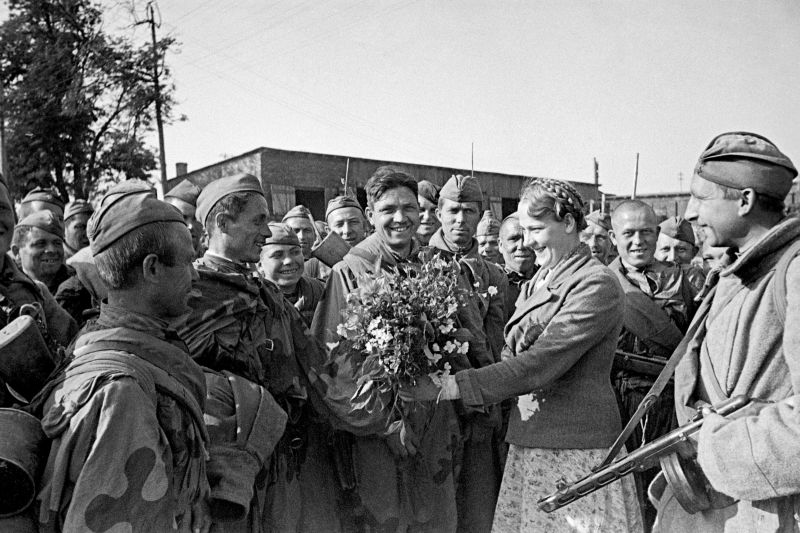
Жители города Орша встречают своих освободителей
Блиц-опрос: проверь свои знания
⚡ БЛИЦ-ОПРОС ⚡
Операция «Багратион» — правда или нет?
Видеоматериалы
" title="Великая война. 11 серия. Операция Багратион" frameborder="0" allowfullscreen>
" title="Историческое видео 2" frameborder="0" allowfullscreen>
" title="Историческое видео 3" frameborder="0" allowfullscreen>
" title="Историческое видео 4" frameborder="0" allowfullscreen>
Приятного просмотра!
Рекомендуемые книги
- «История Великой Отечественной войны Советского Союза 1941–1945» в 6 томах. — М.: Воениздат, 1960–1965. Фундаментальный труд Министерства обороны СССР, освещающий все этапы войны, включая операцию «Багратион».
- «Операция "Багратион"» / под ред. А.М. Самсонова. — М.: Наука, 1994. Подробный анализ стратегии и тактики советских войск.
- «Освобождение Белоруссии. 1944» / сост. В.А. Жилин. — М.: Вече, 2014. Сборник документов и воспоминаний участников.